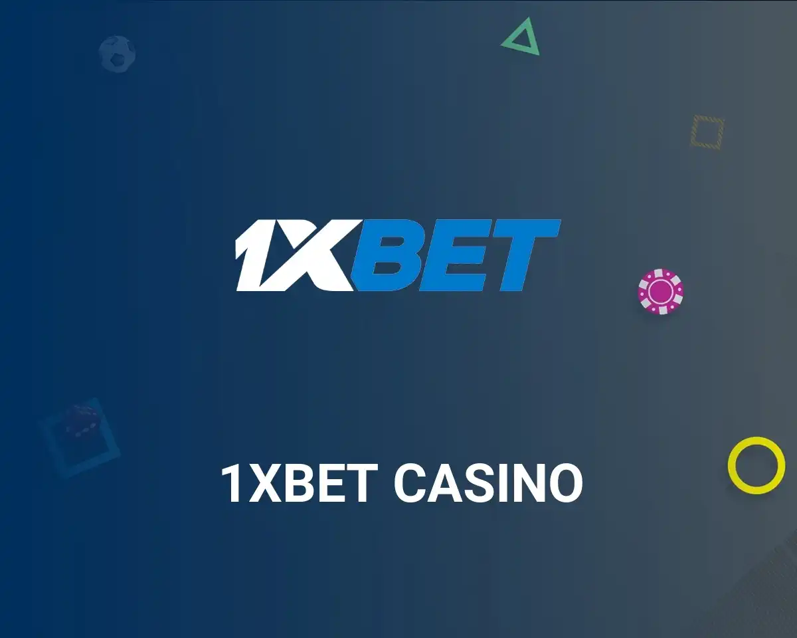
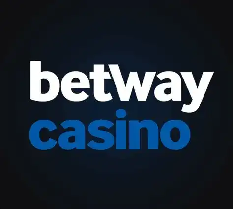
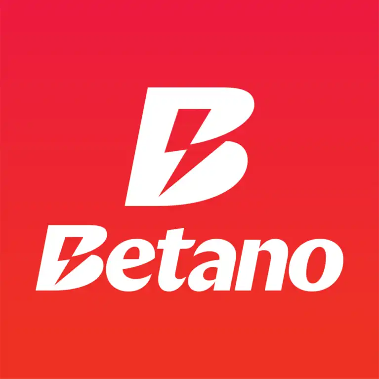
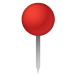
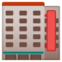
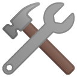
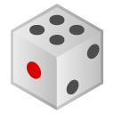
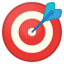

Plinko México - Jogue Online
-

 Bono de bienvenida: hasta 1.950 € + 150 giros gratis
Bono de bienvenida: hasta 1.950 € + 150 giros gratis
Bono en 4 depósitos
Licencia: Curazao eGaming
1xBet Casino
Juega Ahora -

Bono de bienvenida: hasta $1,000
Depósito mínimo: $10
125 giros gratis en Big Bass Hold y Spinner
Licencia: Malta Gaming Authority
Betway Casino
Juega Ahora -

Bono de bienvenida: 50% hasta ₦200,000
Bonos de casino y deportes
Licencia: Autoridade de Jogo de Portugal
Betano Casino
Juega Ahora -
 Bono de bienvenida: 500% hasta $2,800
Bono de bienvenida: 500% hasta $2,800
Depósito mínimo: $1
Licencia: Curazao eGaming
1win Casino
Juega Ahora
Detalles generales del juego Plinko:
| Atributo |  Detalles |
|---|---|
| Nombre del juego | Plinko |
|  Creador original | Presentado originalmente en el programa “The Price is Right” (CBS, Estados Unidos). |
 Año de creación
Año de creación
|
1983 (versión para televisión); versiones digitales disponibles desde mediados de los años 2000. |
 Versión digital moderna
Versión digital moderna
|
Desarrollada por proveedores como Spribe, BGaming y otros |
 Mecánica
Mecánica
|
Juego de azar en el que una bola desciende por un tablero con clavijas hasta alcanzar un multiplicador. |
 RTP (retorno al jugador)
RTP (retorno al jugador)
|
Entre 97% y 99% dependiendo del casino y configuración |
| Niveles de riesgo | Bajo, medio y alto (influyen en la volatilidad y los premios). |
| Modo de apuesta | Apuesta fija por cada lanzamiento, con opción de utilizar múltiples bolas. |
|  Funciones destacadas | Automático, turbo, demo gratuito, personalización de riesgo |
 Compatibilidad
Compatibilidad
|
Disponible en versión web, móvil y apps (Android / iOS) |
| Popularidad en México | Muy elevada debido a su sencillez, dinamismo y la posibilidad de obtener ganancias reales de forma rápida. |
| Recomendación | Solo para mayores de 18 años. Jugar con responsabilidad. |
¿Qué proveedores de software tienen el juego Plinko en su catálogo?
El éxito del juego Plinko en línea se debe a varios desarrolladores de software que han logrado trasladar el clásico formato físico al mundo digital. Estas compañías no solo crean versiones operativas, sino que también mejoran el apartado visual, aseguran la compatibilidad con dispositivos móviles y certifican el funcionamiento mediante tecnologías imparciales como el RNG (Generador de Números Aleatorios).
Uno de los desarrolladores más reconocidos es Spribe, conocido por su interfaz limpia, rendimiento fluido y enfoque transparente. Su versión destaca en México gracias a su elevado RTP, compatibilidad con móviles y diseño moderno. BGaming es otro proveedor destacado, con gráficos dinámicos y funciones que permiten ajustar tanto el nivel de riesgo como los multiplicadores de forma manual.
También hay estudios más pequeños, como SmartSoft o Gamzix, que han lanzado versiones con características adicionales, como misiones, logros o jackpots progresivos. Estas variantes están pensadas para jugadores que buscan una experiencia más dinámica y desafiante.
Antes de elegir un casino, es recomendable verificar qué proveedor ofrece la versión del juego, ya que la calidad, el diseño y las funciones pueden variar considerablemente. Las mejores opciones están auditadas y licenciadas, lo cual asegura que cada caída de bola sea completamente justa y aleatoria.
|  Proveedor |  Características destacadas |
Compatibilidad |
Funciones especiales
|
|---|---|---|---|
| Spribe | Diseño minimalista, interfaz clara y RTP competitivo | Web, Android, iOS | Modo automático, selección de riesgo, historial de jugadas |
| BGaming | Visuales animados, sonidos envolventes y alta fluidez | Web, app móvil | Control manual de la trayectoria, modos turbo y auto |
| SmartSoft | Estilo arcade, recompensas dinámicas y misiones | Navegador móvil y PC | Sistema de logros, giros gratis, tabla de clasificación |
| Gamzix | Estética de casino clásico con efectos brillantes | Compatible con todos los dispositivos | Jackpots progresivos, niveles de bonificación |
¿Por qué es tan emocionante este juego en línea?
El Plinko se ha posicionado como uno de los juegos preferidos por los jugadores en México. Su dinámica es sencilla pero llena de emoción: una bola desciende desde la parte superior de un tablero repleto de clavijas, rebotando de forma impredecible hasta aterrizar en una casilla con un multiplicador, que define el premio final.
A diferencia de muchos otros juegos de casino, Plinko combina el azar con un toque de estrategia, lo que lo convierte en una opción atractiva tanto para principiantes como para usuarios con más experiencia. Lo mejor de todo es que está disponible en cualquier momento y desde cualquier dispositivo.
Diseño visual del Plinko game - simpleza que atrapa
Visualmente, el plinko juego es limpio, moderno y fácil de entender. El tablero suele tener un diseño vertical con múltiples filas de clavijas. Las plinko balls rebotan creando suspenso con cada movimiento.
Muchos casinos permiten elegir colores de bola, velocidad de caída y hasta número de bolas lanzadas al mismo tiempo. Esa personalización aumenta la inmersión y hace del casino plinko una experiencia más interactiva.
Juega AhoraMecánica del juego
Este juego está diseñado para ser directo, pero a la vez emocionante en cada jugada. Algoritmo paso a paso para un juego exitoso
-
Elige tu apuesta:
Decide cuánto quieres apostar. Puedes comenzar con cantidades bajas en pesos mexicanos (MXN).
-
Define el nivel de riesgo:
Bajo, medio o alto, lo que afecta directamente el tipo de multiplicador que puedes obtener.
-
Lanza la bola:
Pulsa el botón para soltar una plinko ball. Puedes elegir la posición de inicio.
-
Espera el resultado:
La bola caerá en una casilla con multiplicador. Tu ganancia se calcula automáticamente.
La sencillez de esta mecánica ha hecho que muchas personas se interesen por este juego y busquen como se juega plinko. En menos de cinco minutos, cualquier persona puede comenzar a jugar con confianza, ya sea en modo demo o con dinero real.
Cómo jugar Plinko para ganar dinero real de forma segura y estratégica
Si quieres jugar al plinko para ganar dinero real, no te lances sin plan. Empieza poco a poco, usa los recursos disponibles y mantén siempre el control de tu juego.
-

Empieza con el modo demo para familiarizarte.
-
Establece un presupuesto de juego claro.
-
Aprovecha los bonos y promociones disponibles.
-
Ajusta el nivel de riesgo según tu estilo de juego.
-
Observa tus resultados y adapta tu estrategia.
FAQ – Preguntas frecuentes sobre el juego Plinko
-
¿Puedo jugar Plinko sin registrarme en un casino?
Sí, muchos casinos ofrecen la opción de jugar en modo demo sin necesidad de crear una cuenta. Esta modalidad gratuita es ideal para conocer cómo funciona el juego y practicar tus estrategias sin ningún riesgo. Sin embargo, para jugar Plinko para ganar dinero real, sí necesitarás registrarte e ingresar tus datos.
-
¿Cuánto dinero necesito para empezar a jugar Plinko?
Depende del casino, pero la mayoría permite comenzar con apuestas mínimas desde $10 o $20 MXN. Esto hace que el plinko juego sea accesible para cualquier bolsillo. Puedes ajustar la apuesta en cada ronda según tu presupuesto y estilo de juego.
-
¿Cuál es la diferencia entre riesgo alto, medio y bajo en Plinko?
El nivel de riesgo que eliges afecta directamente los multiplicadores disponibles. Con riesgo bajo, las ganancias son más frecuentes pero pequeñas. En cambio, con riesgo alto puedes ganar mucho más… pero con menor probabilidad. Es una decisión estratégica que cambia totalmente la dinámica del plinko casino game.
-
¿Plinko es un juego justo o está manipulado?
El plinko game online utiliza un generador de números aleatorios (RNG) certificado, lo que garantiza que cada resultado sea 100% aleatorio. Si juegas en casinos regulados y licenciados, puedes estar seguro de que el juego no está manipulado. Aun así, siempre es importante leer las condiciones de cada sitio.
-
¿Puedo usar criptomonedas para jugar Plinko?
Sí, varios casinos modernos ya aceptan criptomonedas como método de pago para el plinko juego. Puedes depositar, apostar y retirar ganancias en Bitcoin, Ethereum y otras monedas digitales. Solo asegúrate de que el casino tenga soporte cripto y sea seguro.
-
¿Se puede ganar dinero real jugando Plinko o es solo entretenimiento?
Definitivamente se puede ganar dinero real jugando Plinko, siempre que estés en un casino que lo permita. Sin embargo, es un juego de azar y no existe ninguna fórmula mágica para ganar siempre. La clave está en divertirte, usar estrategias responsables y no apostar más de lo que puedas permitirte perder.